Algorithm: Truncated Wirtinger Flow (TWF)
Motivation
Under a stochastic noise model with independent samples, a first impulse for solving 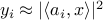 is to seek the maximum likelihood estimate (MLE), namely,
where 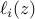 denotes the log-likelihood
of  given 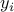.
For instance, under the Poisson noise model 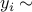 Poisson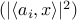, 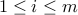,
one has
given 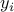.
For instance, under the Poisson noise model 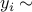 Poisson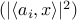, 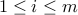,
one has
If we follow the Wirtinger flow 1 approach or other gradient descent paradigms, we would proceed as
for some appropriate initial guess 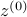, where 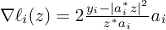 denotes the Wirtinger derivative (or ordinary gradient for the real case). Unfortunately, this approach does not work for real-valued case, since some of the gradient components 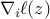 are abnormally large.
| 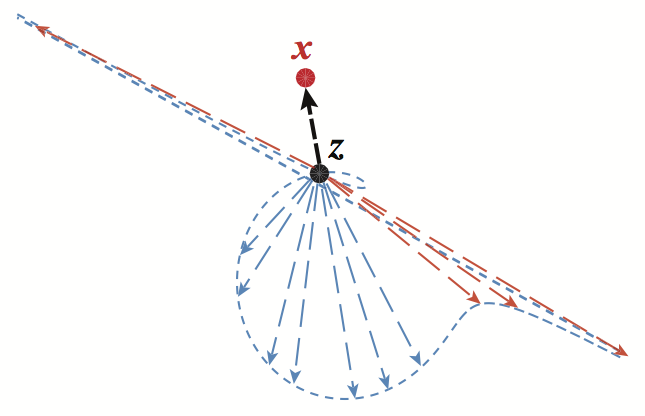 | Figure 1: the locus of 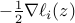 for all unit vectors 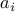. |
TWF methodology
TWF is a novel non-convex procedure that adopts a more subtle gradient flow, which proceeds in two stages:
(1) Truncated Spectral Initialization: compute an initial guess by means of a spectral method applied to a subset of the observations 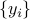 obeying

| 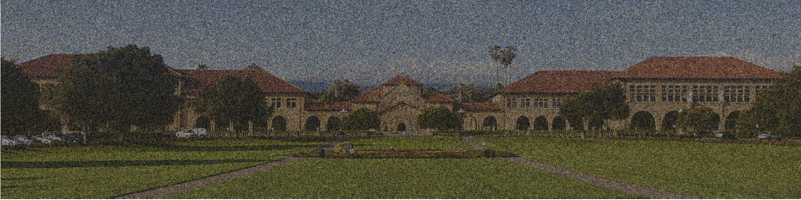 | Estimate after 50 truncated power iterations |
(2) Truncated Gradient Flow: for 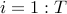,
for some adaptive index set 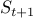 determined by 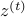; i.e. for any 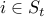,
In words, the adaptive subset guarantees that both 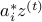 and 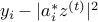 take typical values, and hence none of the gradient component 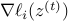 are abnormally large. Here, the step size 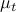 is either chosen to be a constant or determined by a backtracking line search.
Estimate after 50 TWF gradient iterations |
Detailed algorithmic procedure
By default, the step size and the truncation thresholds are set to be 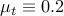, 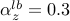, 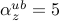, 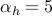, and 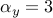.
| 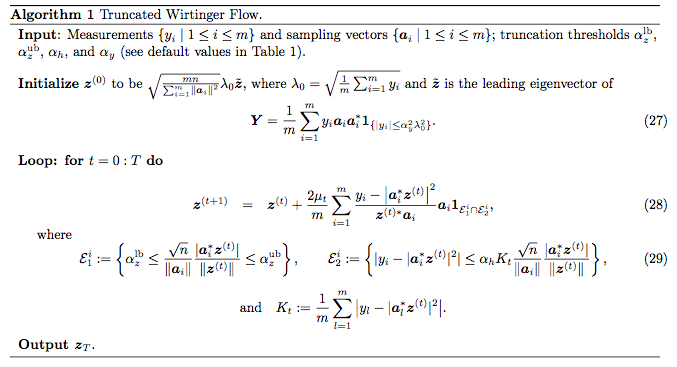 |